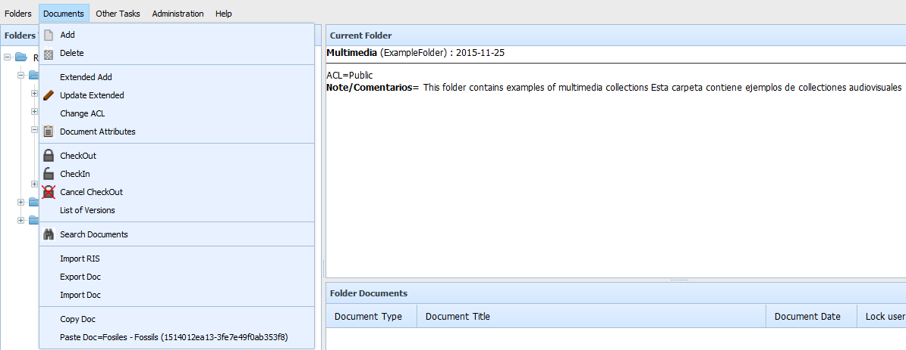

The functions of moving a document allows to move a document between folders easily.
For moving a document, select the document and activate "Documents -> Copy". This action selects the document as an element to be copied, enabling the option "Documents -> Paste" and showing the title and unique code of the document that will be copied. Then you must choose the destination folder and choose "Documents -> Paste". The document will move to the new folder, deactivating the selection. Before pressing "Paste", it is possible to choose a new document, which will replace the previous one.
It can not be done if the document is already blocked, or if there are no deletion permissions at least on the document.
It must be taken into account that moving the document to another folder DOES NOT CHANGE THE PERMISSIONS of the document, it maintains the ACL that it had before being moved. It must also be remembered that the movement to another folder may imply that previously programmed tasks will not appply, or that new ones will apply (Purge, Export, ...), since most of the processes have an application scope of branches of folders.
